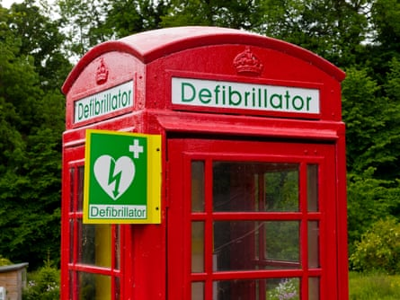

If you had a cardiac arrest before the 1970s, an ambulance might arrive quickly, but almost all its crew could do was transport you to hospital, where your treatment would begin – if indeed you survived the journey. The cardiologist Douglas Chamberlain, who has died aged 94, realised that in order to start resuscitation in the vital five-minute window after the heart stopped beating, the ambulance crew needed the tools and skills to do it themselves.
Chamberlain’s initiative laid the foundations for the paramedic profession nationally and internationally. Working from a district general hospital in Brighton, he set up an intensive training programme for ambulance crews, equipped ambulances with defibrillators and electrocardiogram (ECG) machines, and demonstrated through a series of rigorously documented studies that the service saved lives. The only other city in the world where non-medical professionals were using defibrillators at the time was Seattle in the US.
Not content with training health professionals, he taught cardiopulmonary resuscitation (CPR) to more than 100,000 volunteers from his community in East Sussex, and deployed them to carry out tests of the automatic defibrillators that became available from the 1980s. He was the principal consultant to the Department of Health when it rolled out its first experimental programme of defibrillators in public places between 2000 and 2002. It showed that members of the public could respond as fast as healthcare professionals , and that they saved many lives.
In 1971, soon after taking up his first consultant post as the sole cardiologist at the Royal Sussex County hospital, Brighton, Chamberlain had the experience of losing a patient even though the ambulance had arrived in good time. In the face of scepticism from his medical colleagues, he decided to take responsibility for resuscitation away from doctors and give it to the people who would reach a patient first – the ambulance crews.
He trained them to intubate patients and give intravenous injections as well as take ECGs and administer shocks from a defibrillator. In his hospital he created the role of resuscitation training officer, who ensured that nurses and other hospital staff were equally able to respond to a cardiac emergency. Every hospital now has at least one.
A defibrillator in an old telephone box in Alport, Derbyshire.Photograph: Peakscape/Alamy
From 1973, ambulance services in the UK were transferred from local authorities to the NHS, and Chamberlain was instrumental in ensuring that what were first known as “extended trained ambulance staff” were high on the agenda. In 1984 the University of York published a report, commissioned by the Department of Health , showing that there was a compelling case for a national paramedic service, with standard training packages delivered by regional ambulance training schools.
Piloted in various regions, the service was gradually rolled out across the country. Paramedics were officially recognised as allied health professionals in 1999.
Chamberlain went on to develop the further training of paramedics as practitioners in emergency care, who would carry out tasks such as taking histories and prescribing that were previously in the hands of doctors only.
He combined a powerful drive to get things done with an ability to build coalitions to take his ideas forward. In the 1970s he found that training in resuscitation in the community was a piecemeal affair, with organisations such as the Red Cross, St John’s Ambulance and the British Heart Foundation setting their own standards.
Over a drink, he brought together colleagues from other specialties, including anaesthetics and emergency medicine, to found the Community Resuscitation Council, later Resuscitation Council UK . The council ran conferences and published guidelines that achieved consensus across the specialities on how to approach patients who had collapsed.
He went on to do the same for Europe, recruiting like-minded colleagues to set up the European Resuscitation Council . His anaesthetist colleague and friend the late Peter Baskett credited him with “masterly persuasion and diplomacy” in finally bringing the world together through the International Liaison Committee on Resuscitation (Ilcor).
Born in Cardiff, Douglas was the eldest of three children of Roland Chamberlain, a coal merchant, and his wife May (nee Meredith), who looked after the home. He had two sisters, Liz and Polly. Douglas’s profound dyslexia (then unrecognised) caused him to fail at school until the sympathetic guidance of a teacher at Ratcliffe college in Leicester, where his parents had sent him as a boarder, enabled him to win a place to study medicine at the University of Cambridge.
He went on to qualify in medicine at St Bartholomew’s hospital in London in 1956. There he met a fellow student, Jennifer Ellison, and they married in 1958. After some short-term training posts, he joined the Royal Army Medical Corps in 1959 to do his national service and was posted to Germany, his service ending in December 1960 with the rank of acting major. He and Jennifer had four children in four years, the family settling initially in Highgate, north London.
Sadiq Khan, the mayor of London, at Highbury and Islington station in 2023, announcing that all London Underground, Overground stations and Dial-a-Ride vehicles were to be equipped with defibrillators.Photograph: Stefan Rousseau/PA
Between 1962 and 1970 he returned to Barts and began a programme of research on heart rate and rhythm, investigating pacemakers and drugs. During this time he spent a year as a research assistant at the Massachusetts General hospital in Boston, a formative period in developing his interest in innovative treatments.
Chamberlain was among the first to test the effects of beta blockers on heart rate in both healthy volunteers and cardiac patients, and to conduct trials of the drug amiodarone in patients with heart arrhythmias . Both classes of drug are now in regular use in heart patients.
In 1970 Chamberlain took up his consultancy in cardiology at the Royal Sussex, where he continued in an honorary post after his retirement in 2000, and remained honorary medical adviser to the South East Coast Ambulance Service NHS foundation trust. In 1996 he also accepted an honorary professorship of resuscitation medicine at the University of Cardiff, where he led a research team, continuing to publish prolifically and tour the world to give lectures. The book Cardiac Arrest: The Science and Practice of Resuscitation Medicine , a massive tome that he co-edited with four colleagues, won the 2008 British Medical Association prize in cardiology.
Chamberlain received many other awards, being appointed CBE in 1988. His work ethic was legendary. Equally committed to patient care, research and teaching, he regularly worked till past midnight. His “good citizen” roles included chairing the governors of his local primary school as well as numerous professional committees. Yet he always had time to offer wise advice to anyone who asked him for help.
He is survived by Jennifer, his four children, Mary, Frances, Peter and David, nine grandchildren and his sisters.